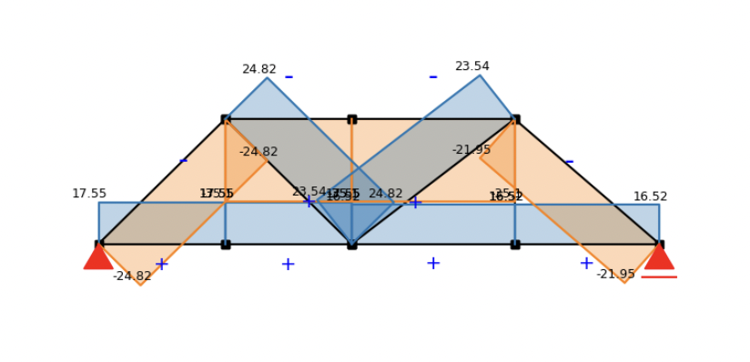
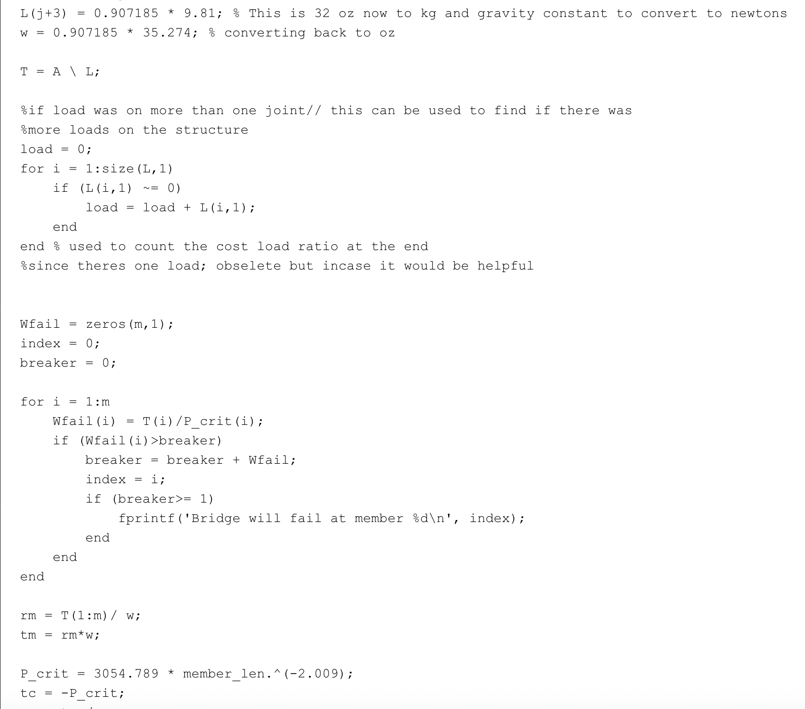

Our method for truss calculation is the joint method. Firstly, we evaluate the whole truss as an entity. We calculate the reaction forces at the two support pins by drawing a free-body diagram and applying the conditions that net force and moment equal zero.
We then assume all members are in a state of tension and draw the free-body diagram for each joint analyzed. This step is typically computed using matrices. Assuming the total number of joints is J and the number of members is M, the resulting matrix should be of size (M+1) by 2J.
Using RREF (Reduced Row Echelon Form), we can solve for the force in each member. A negative value indicates compression; a positive value indicates tension.
If this process is done manually, we analyze each joint sequentially and solve the linear equations gradually. The example solution for the practice problem is shown in Figure 2. After comparison with our code-based approach, both methods yielded identical results.


Conclusion
The maximum load of the select truss (36.87±1.356oz ).
Ways to further imprive figure is by adjusting the nodes to minimize the length of every member.
Team Members
Jindong Feng, Ana Jaquez-Zarate, and Melissa Regalado